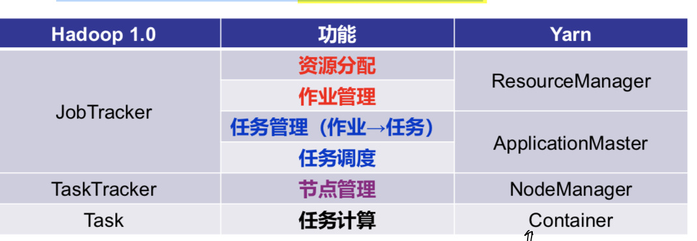
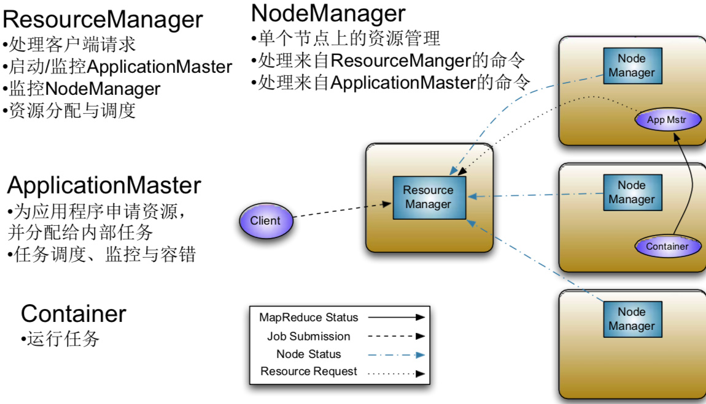
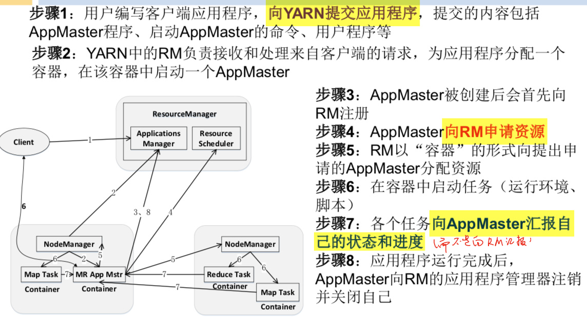

背景介绍
MapReduce v1
- JobTracker
- Manage Cluster Resources & Job Scheduling
- TaskTracker
- Per-node agent
- Manage Task
- 其中，JobTracker承担了太多的任务
- 作业管理
- 状态监控，信息汇总
- 任务管理
- 调度，监控
- 资源管理
- 作业管理
MapReduce 1.0 缺陷
- JobTracker存在单点故障风险
- JobTracker“大包大揽”内存开销大
- 资源分配只考虑MapReduce任务数量，不考虑任务需要 的CPU、内存，TaskTracker所在节点容易内存溢出
- 资源划分不灵活(强制等量划分为slot ，包括Map slot和 Reduce slot)
- 资源管理不单单是MapReduce系统所需要的，而是通用的
YARN
- Yet Another Resource Negotiator
- 设计思路
- 资源管理与计算相分离
- MapReduce 1.0既是计算框架，也是资源管理框架
- Yarn是独立出来的资源管理框架
- 
YARN体系结构

ResourceManager
- ResourceManager(RM)是一个全局的资源管理器，包括
- 资源调度器(Resource Scheduler)
- 资源分配
- 应用程序管理器(Application Manager)
- 所有应用程序的管理工作(轻量作业管理)
- 检查是否由足够资源部署application master
- 维护application id
- Web UI展示信息
- 资源调度器(Resource Scheduler)
NodeManage
- 监控所在节点每个Container(容器)的资源 (CPU、内存等)使用情况、健康状况
- 向ResourceManager汇报作业的资源使用 情况和每个容器的运行状态
- NodeManager主要负责管理抽象的容器， 只处理与容器相关的事情，而不具体负责每个任务(Map任务或Reduce任务)自身状态的管理
ApplicationMaster
- 与ResourceManager(RM)的交互
- 与RM协商获取资源，把获得的资源进一步分配给内部的各个任务(Map或Reduce任务)
- 定时向RM报告资源使用情况和应用进度信息 作业完成时，向RM注销容器，执行周期完成
- 与NodeManager保持通信进行应用程序的 管理
- 监控任务的执行进度和状态，并在任务发生失败时重新申请资源重启任务
Container
- 容器(Container)作为动态资源分配单位 ，每个容器中都封装了一定数量的CPU、 内存、磁盘等资源，从而限定每个应用程 序可以使用的资源量
- 执行计算任务
- 无论是MapReduce还是Spark，都可以执行
YARN工作流程

YARN发展目标
- 一个框架多个系统
- 在一个集群上部署一个统一的资源调度管理框架YARN，在 YARN之上可以部署其他各种计算系统
- 由YARN为这些计算系统提供统一的资源调度管理框架，并且能够根据各种计算系 统的负载需求，调整各自占用的资源，实现集群资源共享和资源弹性收缩
- 可以实现一个集群上不同应用负载混搭，有效提高了集群的利用率
- 不同计算系统可以共享底层存储，避免了数据集跨集群移动